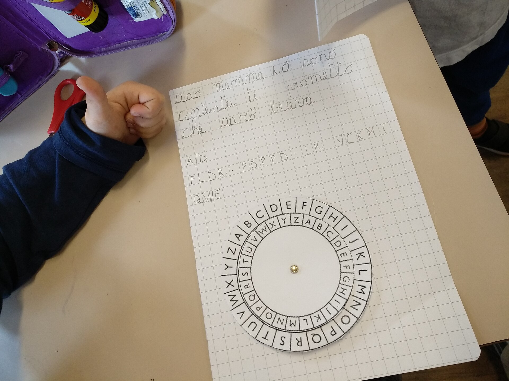
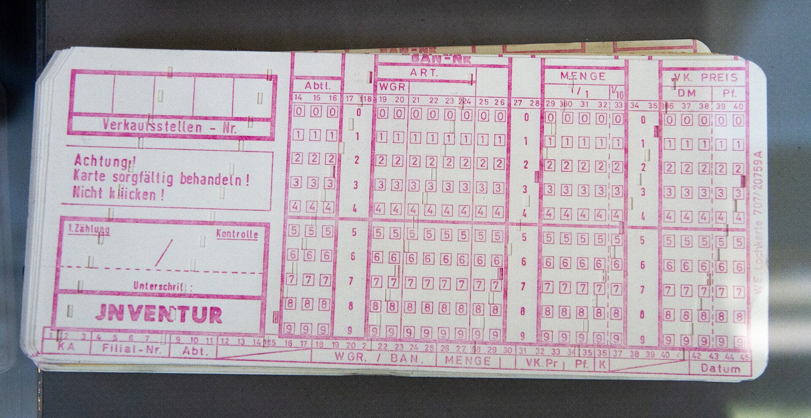

Сообщение, которое прочтёт только свой
Письмо, которое прочтёт любой, — это открытка. Письмо, которое прочтёт только адресат, — это шифр. Разница между ними — ключ.
Сегодня мы пройдём путь, который человечество шло две с половиной тысячи лет: от сдвига букв в военных донесениях до квадратика, в котором помещается целая ссылка. И каждый раз будем отвечать на один вопрос: как именно спрятано сообщение и что нужно знать, чтобы его вернуть?
Вопрос на весь урок: если я дам вам зашифрованный текст, но не дам ключ, — это честная задача или нечестная? Почему?
Код и шифр — не одно и то же
В быту мы говорим «закодировать» обо всём подряд. На уроке договоримся различать два слова — иначе не получится объяснить, почему одни системы ломаются за минуту, а другие за тысячу лет.
Три свойства, по которым судят о шифре
| Свойство | Что означает | Проверка на практике |
|---|---|---|
| Обратимость | Зная ключ, адресат обязан вернуть исходный текст без потерь | Зашифровали и расшифровали — получили ровно то же слово |
| Стойкость | Насколько трудно вскрыть текст, не зная ключа | Сколько вариантов нужно перебрать: у Цезаря — 32 |
| Устойчивость к помехам | Переживёт ли сообщение царапину, пятно, плохую печать | QR-код читается, даже если часть квадрата закрыта |
Путь длиной в две с половиной тысячи лет
Шифр Цезаря: сдвиг по кругу
Гай Юлий Цезарь, по свидетельству Светония, писал донесения, заменяя каждую букву четвёртой по счёту после неё. Просто? Да. И именно поэтому на этом примере удобно понять всю механику шифрования.

Алгоритм в четыре шага
- Записать алфавит в строку: А Б В Г Д Е Ё Ж З И Й К Л М Н О П Р С Т У Ф Х Ц Ч Ш Щ Ъ Ы Ь Э Ю Я (33 буквы).
- Выбрать ключ — число k от 1 до 32. Например, k = 3.
- Каждую букву текста заменить буквой, стоящей на k позиций правее. После «Я» счёт идёт с начала.
- Для расшифровки делать то же самое, но сдвигать на k позиций влево.
Попробуйте сами — машина шифра
Атбаш и Виженер: два способа усложнить
У Цезаря слабое место очевидно: ключей всего 32, их можно перебрать за пять минут. Люди придумали два разных ответа на эту слабость — убрать ключ вообще (Атбаш) и сделать ключ словом (Виженер).
Атбаш: алфавит-зеркало
Название — от еврейских букв алеф-тав-бет-шин: первая заменяется последней, вторая — предпоследней. В русском алфавите «А» меняется на «Я», «Б» — на «Ю», «В» — на «Э».
| А | Б | В | Г | Д | Е | Ё | Ж | З | И | Й |
|---|---|---|---|---|---|---|---|---|---|---|
| Я | Ю | Э | Ь | Ы | Ъ | Щ | Ш | Ч | Ц | Х |
Виженер: ключ — слово
Француз Блез де Виженер в XVI веке предложил сдвигать каждую букву на своё число, взятое из ключевого слова. Ключ повторяется, а сдвиг меняется от буквы к букве — и простая «частотная атака» перестаёт работать.
| Шаг | Значение | Пояснение |
|---|---|---|
| Открытый текст | H E L L O | пять букв латиницы |
| Ключ (повтор) | K E Y K E | слово KEY повторяется по кругу |
| Сдвиги | 10 4 24 10 4 | K=10, E=4, Y=24 (A=0, B=1, …) |
| Шифртекст | R I J V S | H+10=R, E+4=I, L+24=J, L+10=V, O+4=S |
Двоичный код: когда буквы становятся числами
Компьютер не умеет хранить буквы. Он умеет хранить только «есть ток» и «нет тока» — 1 и 0. Значит, любое сообщение нужно превратить в последовательность чисел. Этим занимается кодирование, и таблица соответствия — это кодовая книга.

Как перевести букву в биты
- Взять номер символа в таблице ASCII (для латинских букв): A = 65, B = 66, … K = 75.
- Разложить число по степеням двойки: 75 = 64 + 8 + 2 + 1.
- Записать восемь позиций 128 64 32 16 8 4 2 1: где число «участвует» — ставим 1, где нет — 0.
- Получаем 01001011 — ровно один байт.
| Буква | Код | Двоичное | Проверка |
|---|---|---|---|
| H | 72 | 01001000 | 64 + 8 |
| I | 73 | 01001001 | 64 + 8 + 1 |
| O | 79 | 01001111 | 64 + 8 + 4 + 2 + 1 |
| K | 75 | 01001011 | 64 + 8 + 2 + 1 |
И наконец — QR-код
QR-код придумали в Японии в 1994 году для автозапчастей: нужно было подписать много деталей на маленькой площади. Внутри — та же идея «буква → число → биты», но с важным добавлением: избыточность. Часть квадрата можно закрыть — и код всё равно прочитается.
Тренажёр: расшифруй вслух
Работаем устно, по цепочке. На карточке — шифртекст и подсказка, каким способом он закрыт. Тот, кого спросили, называет ответ и объясняет ход: «сдвиг три, значит П, потом Р…». Ответ открывается кнопкой — сверяем.
Расшифруйте слово
Шесть заданий в тетрадь
Записываем в тетрадь число, «Шифры и коды», и выполняем по порядку. Ответы открываются под каждым заданием — но только после того, как задание выполнено в тетради.
Зашифруйте слово ИНФОРМАТИКА, используя сдвиг на 5 букв вперёд.
Ответ
Ход: И→Н, Н→Т, Ф→Щ, О→У, Р→Х, М→С, А→Е, Т→Ч, И→Н, К→П, А→Е.
Расшифруйте слово ЯСХТЖ, если известно, что при шифровании применялся сдвиг +7.
Ответ
Ход: сдвигаем назад на 7. Я→Ш, С→К, Х→О, Т→Л, Ж→А.
Зашифруйте слово СИГНАЛ методом Атбаш, а затем расшифруйте получившееся слово обратно — и убедитесь, что вернулось исходное.
Ответ
Ход: С→Н, И→Ц, Г→Ь, Н→С, А→Я, Л→У. Атбаш симметричен: второе применение возвращает текст.
Зашифруйте слово PYTHON шифром Виженера с ключевым словом CODE (латиница, A=0).
Ответ
Ход: C=2, O=14, D=3, E=4; ключ повторяется. P+2=R, Y+14=M, T+3=W, H+4=L, O+2=Q, N+14=B.
Запишите слово CODE в двоичном коде ASCII (каждая буква — 8 бит).
Ответ
Ход: C=67=64+2+1, O=79=64+8+4+2+1, D=68=64+4, E=69=64+4+1.
Заполните таблицу в тетради: для каждого способа укажите, есть ли ключ, сколько вариантов нужно перебрать без ключа и где он применялся.
| Способ | Ключ | Перебор | Где применялся |
|---|---|---|---|
| Цезарь | число 1–32 | 32 варианта | донесения, учебные задачи |
| Атбаш | нет | 0 — метод известен | древние тексты |
| Виженер | слово | зависит от длины слова | дипломатия XVI–XIX вв. |
| Двоичный код | нет (это код) | не нужен | компьютеры, файлы |
| QR-код | нет (это код) | не нужен | ссылки, маркировка |
Что важно в выводе
Дома: три шифра и одна задача на смекалку
Зашифруйте слово РОБОТ сдвигом на 13 вперёд, затем расшифруйте результат обратным сдвигом и проверьте себя.
Ответ
Зашифруйте методом Атбаш слово МИР. Объясните одной фразой, почему для расшифровки не нужен ключ.
Ответ
Запишите слово LESSON в двоичном коде ASCII (по 8 бит на букву).
Ответ
Ход: L=76, E=69, S=83, S=83, O=79, N=78.
Друг прислал слово ХЩО и сказал: «Это шифр Цезаря, сдвиг я тебе не скажу». Найдите ключ и расшифруйте слово. Сколько вариантов пришлось перебрать?
Ответ
Х = 22-я буква, К = 11-я: 22 − 11 = 11. Перебирать пришлось до 11 вариантов — именно поэтому у Цезаря всего 32 ключа и шифр считается ненадёжным.
Что должно остаться в голове
Я умею
Я понимаю
Урок «Шифры и коды: от Цезаря до QR» · информатика · 45 минут
Иллюстрации: Wikimedia Commons (CC BY-SA 4.0) и авторские схемы